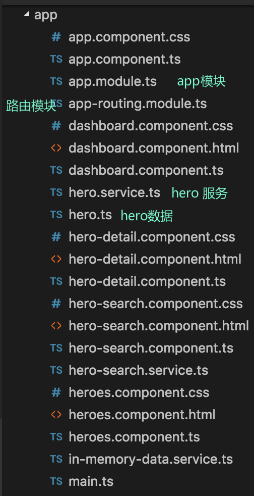
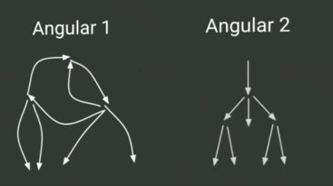
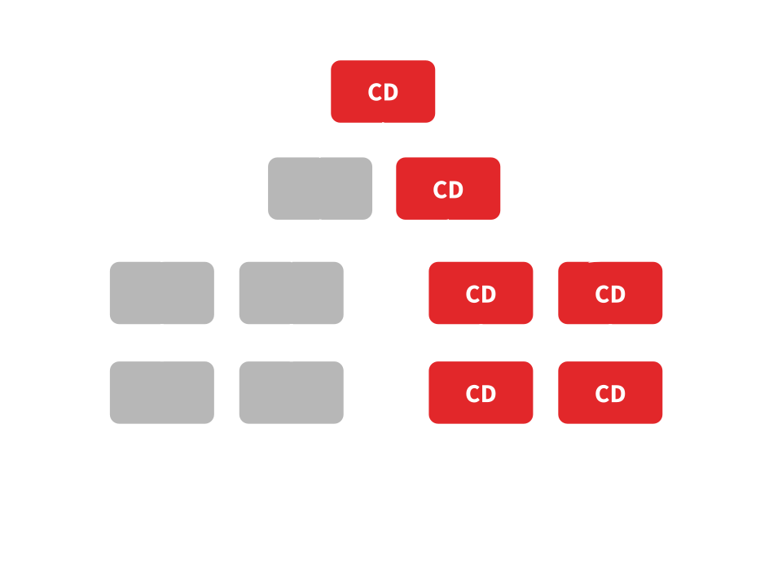

Angular X

Angular 是什么？
< 英文叫 angular bracket.
Angular 特性
- 跨平台开发 - Web应用、移动Web应用、原生移动应用和原生桌面应用等
- 扩展性 - 扩展HTML的语法以清晰，简洁地表达应用程序的组件
- 一站式 - router, DI, form, pipe...
- 速度与性能 - Web Worker，服务端渲染，AOT
Browser support of Angular2

Using TypeScript

Angular 架构

Angular 主要的构成部分：
- 模块（module）
- 组件（component）
- 模板（template）
- 元数据（metadata）
- 数据绑定（data binding）
- 指令（directive）
- 服务（service）
- 依赖注入（dependency injection）
新手篇
一个例子
App 模块
import { NgModule } from '@angular/core';
import { BrowserModule } from '@angular/platform-browser;
import { HelloWorldComponent } from './hello-world.component';
@NgModule({
imports: [ BrowserModule ],
declarations: [ HelloWorldComponent ],
bootstrap: [ HelloWorldComponent ]
})
export class AppModule {}
启动模块
main.ts
import { platformBrowserDynamic } from '@angular/platform-browser-dynamic';
import { AppModule } from './app.module';
platformBrowserDynamic().bootstrapModule(AppModule);
index.html
<body>
<my-app>Loading AppComponent content here ...</my-app>
</body>
App 组件
import { Component } from '@angular/core';
@Component({
moduleId: module.id,
selector: 'my-app',
templateUrl: 'app.component.html',
styleUrls: ['app.component.css']
})
export class AppComponent {
title = 'App Component';
}
一些常用的组件属性
| animations | 动画列表 |
| changeDetection | 变化检测策略 |
| encapsulation | 样式封装策略 |
| host | 元素映射到host |
| inputs | 输入 |
| outputs | 可订阅的输出 |
| viewProviders | 本身及子视图可用provider |
| ... | ... |
模板
<h3>Top Heroes</h3>
<div class="grid grid-pad">
<a *ngFor="let hero of heroes" class="col-1-4">
<div class="module hero">
<h4>{{hero.name}}</h4>
</div>
</a>
</div>
<hero-search></hero-search>
数据绑定
| data -> view | {{expression}},[target] = "expression",bind-target = "expression" |
| view -> data | (target) = "statement",on-target = "statement |
| data <-> view | [(target)] = "expression",bindon-target = "expression" |
管道
import { Component } from '@angular/core';
@Component({
selector: 'hero-birthday',
template: `The hero's birthday is {{ birthday | date:"MM/dd/yy" }}
`
})
export class HeroBirthdayComponent {
birthday = new Date(1988, 3, 15); // 04/15/88
}
管道
- 链式管道（Chaining pipes）
- 纯(pure)管道与非纯(impure)管道
- 非纯管道AsyncPipe
自定义管道
import { Pipe, PipeTransform } from '@angular/core';
@Pipe({name: 'exponentialStrength'})
export class ExponentialStrengthPipe implements PipeTransform {
transform(value: number, exponent: string): number {
let exp = parseFloat(exponent);
return Math.pow(value, isNaN(exp) ? 1 : exp);
}
}
指令
- 拥有模板的指令 - 组件
- 结构性指令 - ngIf,ngFor
- 属性指令 - NgStyle,NgClick
import { Directive, ElementRef, Input, Renderer } from '@angular/core';
@Directive({ selector: '[myHighlight]' })
export class HighlightDirective {
constructor(el: ElementRef, renderer: Renderer) {
renderer.setElementStyle(el.nativeElement, 'backgroundColor', 'yellow');
}
}
依赖注入
不使用 DI
export class DashboardComponent implements OnInit {
heroes: Hero[] = [];
heroService: HeroService
constructor(private heroService: HeroService) {
this.heroService = new HeroService();
}
ngOnInit(): void {
this.heroService.getHeroes()
.then(heroes => this.heroes = heroes.slice(1, 5));
}
}
使用 DI
export class DashboardComponent implements OnInit {
heroes: Hero[] = [];
/**
* ts通过构造函数参数注入
* 当然前提是 HeroService 是 Injectable，并且已经被注册
**/
constructor(private heroService: HeroService) { }
ngOnInit(): void {
this.heroService.getHeroes()
.then(heroes => this.heroes = heroes.slice(1, 5));
}
}
老司机篇
组件生命周期

export class PeekABoo implements OnInit {
constructor(private logger: LoggerService) { }
// 实现 OnInit 接口的 `ngOnInit` 方法
ngOnInit() { this.logIt(`OnInit`); }
logIt(msg: string) {
this.logger.log(`#${nextId++} ${msg}`);
}
}
组件更新
ZONES
ngZone
function foo() {}
function main() {
foo()
setTimeout(() => console.log('Async task'),2000)
}
var myZoneSpec = {
beforeTask: function () {
console.log('Before task');
},
afterTask: function () {
console.log('After task');
}
};
var myZone = zone.fork(myZoneSpec);
myZone.run(main);
// Logs:
// Before task
// After task
// Before task
// Async task
// After task


ng1 vs ng2
Smarter Change Detection
Immutable
Observables
组件之间的通讯
- input,output
- 子组件通过 ngOnChanges 拦截
- 父子组件通过 local variable
- 父组件调用ViewChild
- service
Ahead-of-Time(AoT) vs Just-in-Time(JiT)
- 渲染更快
- 减少异步请求
- 减少下载 Angular 框架体积
- 提早检测模板错误
为何使用 AoT ?
开发使用 JiT, 生产使用 AoT